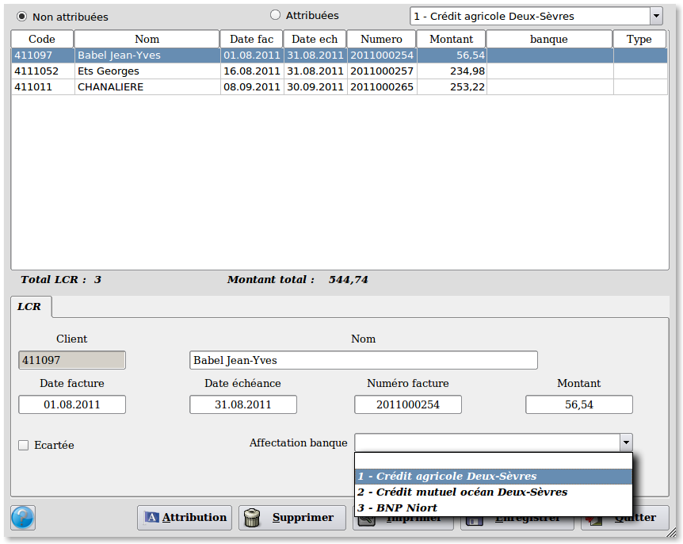
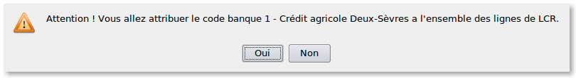

~ Laurux.LCR ~

~ Laurux.LCR ~ |
|
|
|
Attribution des banques.

Ce programme permet l'aattribution des banques aux LCR.
Il permet l'affichage des LCR
attribuées et non attribuées. (NB : Les LCR écartées ne s'affichent pas)
On peut attribuer une banque manuellement ou pour l'ensemble des LCR affichées.
Pour l'attibution manuelle on
sélectionne d'abord la LCR concernée puis on sélectionne la banque dans
la partie concernant le détail de la LCR sélectionnée.
Si une LCR ne doit pas être traitée on peut
l'écarter. (NB : Pour réinteger une LCR écartée on passera par le "Traitement des LCR non attribuées"
Pour l'attribution de l'ensemble des LCR affichées, il faut d'abord sélectionner la banque dans la partie haute de l'écran puis cliquer sur le bouton "Attribution".

NB : Pour remettre une LCR dans la liste des LCR non attribuées il suffit de rappeler la LCR puis de mettre à blanc la zone" Affectation banque"
----------------------------------------------------------------------------------------------------------------------